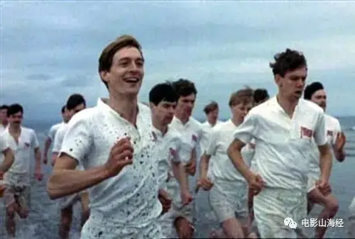
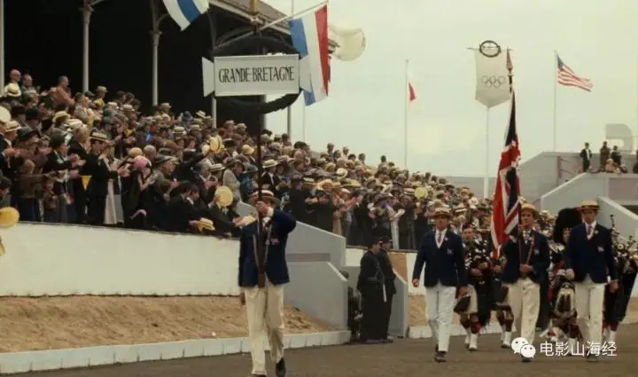
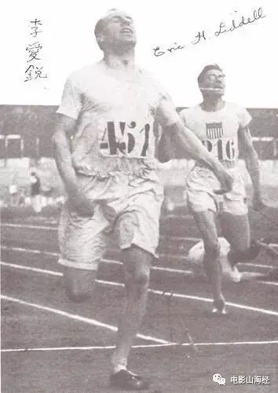
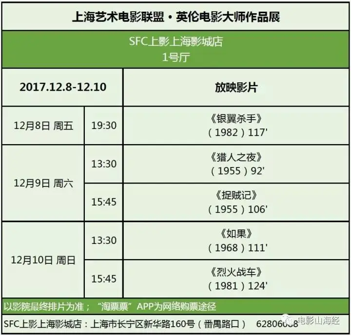

内容转自 电影山海经
1919年，哈罗德·亚伯拉罕考入剑桥大学，作为犹太人的他，在学校里感受到强烈的反犹气氛，但依然靠个人天赋，成为体育社的明星。他最著名的时刻就是在三一学院的大中庭，挑战在大钟敲响的12下内，跑完367米全程，成为700年里挑战成功的第一人。

1920年，苏格兰的埃里克·利迪尔进入爱丁堡大学学习，他于1902年出生在中国天津，中文名字叫李爱锐，父亲是基督教牧师。李爱锐也笃信上帝，认为尽情奔跑是感谢上帝的一种方式，他常常出席体育比赛，并在赛后传教，被誉为苏格兰飞人。
1924年，巴黎举办第八届奥运会，亚伯拉罕和李爱锐双双代表英国队出征。在出征前夕，李爱锐发现100米赛跑资格赛在星期日举行，由于是虔诚的基督徒，因此他拒绝在安息日比赛……

李爱锐在奥运会结束后回到天津，担任宣教工作并在教会学校新学书院（今天津市第十七中学）教化学和体育。英租界工部局邀请李爱锐参与设计民园体育场，1929年落成后他还亲自参加了运动会的400米赛跑。
抗战期间，李爱锐曾去河北衡水一带工作，1941年他安排家人离开后，自己留下来参加敌后抗日工作。1943年，李爱锐被日军作为人质关入山东潍坊的集中营，此时他长了脑瘤。1945年2月21日，李爱锐在集中营里去世。李爱锐在战后被葬在了河北石家庄市的华北烈士陵园，而在山东集中营原址乐道院，也有他的纪念碑。

2008年北京奥运会举办前夕，李爱锐的家人来到潍坊，为他举办了一场追思会。出席嘉宾里，有一个名叫大卫·普特南的制片人，他为大家放映了一部他于1981年监制的影片《烈火战车》，这部讲述亚伯拉罕和李爱锐在1924年巴黎奥运会传奇经历的影片，令现场出席的中方领导、观众以及李爱锐的家人都流下了热泪。
12月10日本周日下午15：45，《烈火战车》这部获得奥斯卡最佳影片等四项大奖、带动英国电影工业复兴的经典名作的最新数字修复版，将藉由上海艺术电影联盟的2017英伦电影大师展登陆上海影城东方巨幕厅，这也是这部名作数字修复版的上海首映。
我们以此片的上海首映向李爱锐致敬，也欢迎在上海的基督徒跟我们一起走进影院，欣赏这部激动人心的体育电影、同时也是抚慰人心的福音电影。
上海艺术电影联盟2017英伦电影大师展排片表如下。目前，《猎人之夜》、《如果》、《捉贼记》、《烈火战车》尚有少量余票，购票请登录淘票票app-影院-SFC上海影城-英伦电影大师展

《烈火战车》获得奥斯卡奖的荣耀时刻
《烈火战车》修复版预告片
相关推荐：
《潜行者》 | 这是全人类绝无仅有的电影了
《至暗时刻》| 永不！永不！永远都不要放弃！
读过《天路历程》，你看过改编的电影么？
上海·电影·放映·影迷·交流
电影山海经｜电影迷小小的家
微信ID：Cinematographe
长按二维码关注电影山海经
这里没有挑逗你眼目情欲的小鲜肉
也没有挑动你肉体情欲的段子
更没有膨胀你今生骄傲的鸡血
我们只在乎那些最质朴真诚的作品
在那里我们才能恢复真正的想象力
我们也坚信这才是我们真正需要的

ID:Six_hundred_hits
长按二维码，一键关注
【六百击】
-END-
电影评论
尽情分享朋友圈